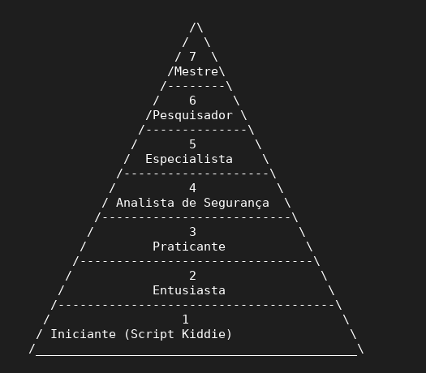

Niveis de hacking:
Aviso: Aqui iremos utilizar o termo "hacker" para o pessoal leigo poder entender melhor.

Mensagem de Ex3cutor76: Isso eu criei com base em muitos comentários em relação a "hacker" e a "piramede de aprendizado", na
realidade não existe "níveis de aprendizado", mas, muitos fazem vídeos assim e alguns até não entendem, então,
decidi criar por parte na minha visão, todos podem ter a visão de como é, não é obrigado a seguir a mesma visão
que a minha.
Como podem ver pela piramede em ASCII, aqui coloquei 7 níveis de aprendizado do Hacking
e irei explicar todos eles.
1) Script Kiddie:
Ou também conhecido como "iniciantes" são aquelas pessoas que estão começando no hacking, no
caso... São pessoas que usam ferramentas prontas, mas muitas vezes não sabem como
essas ferramentas funcionam, e uma curiosidade? Muitos ataques simples e
oportunistas na internet podem feitos por script kiddies, utilizando ferramentas
prontas, que inclusive são até presos por isso, afinal, não fazem isso de forma ética, não
que todos os script kiddies são criminosos e que até são de certa forma "ignorantes" na verdade,
diferente, eles só não tem a noção do problema que isso pode causar, claro que recentemente a maioria
das comunidades de segurança usam o termo "script kiddie" como um xingamento, mas, na realidade só são iniciante mesmo.
2) O entusiasta:
E é aqui onde você tem mais consciência das coisas, tipo, por aqui você aprende tanta coisa que literalmente
até te faz sentir que você não sabe nada, mas, não desanime, afinal, você vai aprender com todos os seus erros,
os entusiastas são praticamente iniciantes também, mas, estão aprendendo coisas em relação aos sistemas, e não
dependem apenas de ferramenta pronta e começam a estudar o sistema, como redes, sistemas operacionais e etc.
3) Praticante:
Esse já é o cara que estuda praticando, literalmente ele participa de CTF's, faz testes em uma VM (Virtual Machine)
e até automatiza algumas tarefas simples, além de claro, fazer algumas atividades legais de hacking ético.
4) Analista de segurança:
E é aqui onde o Blue Team entra com força, esse tipo de hacker ele apenas investiga e analisa falhas de segurança, por exemplo,
ele pode fazer monitoramento do sistema, investigação de incidentes e até ajudam a proteger organizações e empresas,
e adivinha? Muita gente que chega por aqui começa a trabalhar de SOC analyst ou até participa
de Bug Bounty (No caso é um evento que as empresas fazem para encontrar vulnerabilidades no sistema e fazem recompensas
em dinheiro por cada bug ou vulnerabilidade que você encontrar).
5) O especialista:
Aqui já é o cara que já possui domínio avançado em uma ou mais áreas da cybersegurança (Sim para você que não sabe, a cybersegurança
possui diversos áreas de segurança.), normalmente esse tipo de hacker ele trabalha na parte de Blue Team ou Red Team.
6) Pesquisador:
Tenho admiração por esse nível... Afinal ele descobre vulnerabilidades, desenvolve técnicas, muitas vezes chamadas de Exploit's e até contribui
para pesquisas reais de cybersegurança, então sim, você o user de Kali Linux que literalmente fica usando o Metasploit o tempo todo, acredite,
na maioria desses exploit's foram escritos por esse tipo de hacker.
7) Mestre:
Esses já são aqueles que lideram e influenciam a comunidade de segurança, criando metodologias, liderando pesquisas e até contribui para o avanço real
na área de cybersegurança.